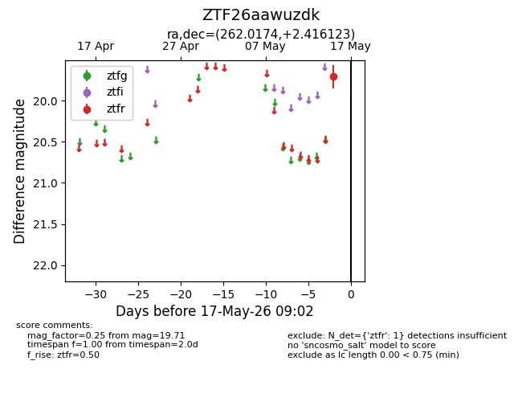
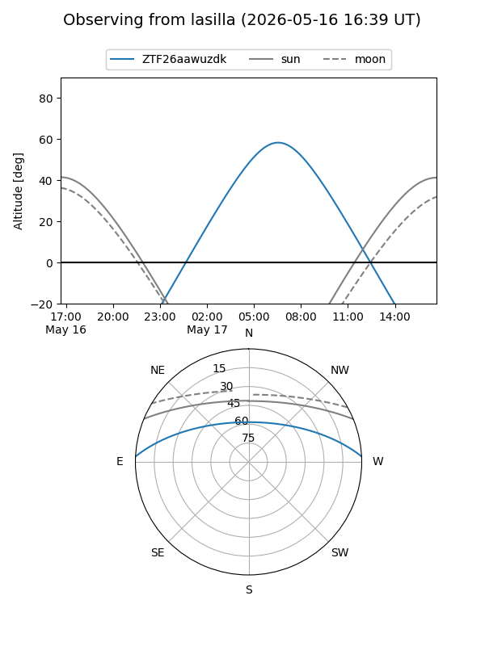
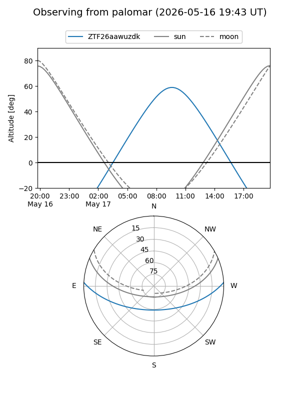

ZTF26aawuzdk
Target ZTF26aawuzdk at 2026-05-17 09:04
Aliases and brokers:
FINK: link
Lasair: link
ALeRCE: link
alt names
ZTF26aawuzdk (ztf,fink_ztf)
Coordinates:
equatorial (ra, dec) = 262.0174,+2.41612
equatorial (HMS+DMS) = 17:28:04.18,+02:24:58.04
galactic (l, b) = (25.3328,+19.60858)
Flags:
Photometry:
last ztfr=19.71
1 ztfr detections
Lightcurve

Visibility


Additional plots